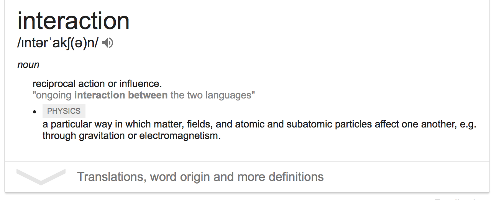

Chapter 16 Model fitting and optimisation
16.1 Overview
- Why models?
- Linear models and correlation
- Model fit, and predictions
- Model basics in R
- Optimisation for model fitting
- Components of variation
- Model goodness of fit statistics
- Beyond a single model
- Fitting many models
- Transformations: building on a stable platform
- Adding interactions to the model - what does this mean?
- Model building - how do you decide when you’ve got the bets possible model?
Image source: Anton Croos Art of Photography
16.2 Why models?
- a simple low-dimensional summary of a dataset
- family of models express a relationship between different variables.
- allows us to predict outcomes of interest, given other variables!
- prediction is critical in many fields
16.2.2 Model families
- A model family is the functional form that describes a relationship between an outcome \((Y)\) and an input, covariate, pre-determined variable \((X)\), e.g.
- \(f(X)=b_0 + b_1 X +b_2 X^2+...+b_p X^p\)
- \(f(X)=b_0\exp(b_1X)\)
- \(f(X_1, X_2)=b_0 + b_1 X_1 + b_2 X_1^2 + b_3 X_2\)
- The fitted model makes this explicit (\(e\) is the residual)
- \(y_i = 2+3x_i+x_i^2-2x_i^3+e_i, i=1, ...., n\) or \(\widehat{y}=2+3x+x^2-2x^3\)
- \(y_i=3\exp(2x_i)+e_i\) or \(\widehat{y}=3\exp(2x)\)
- \(y_i=-5 + 4 x_{i1} - 2 x_{i1}^2 + 10x_{i2}+e_i\) or \(\widehat{y}=-5 + 4 x- 2 x^2+ 10x\)
library(tidyverse)
library(gridExtra)
# This sets the domain of the function to be -1, 1
# and randomly generates values in this domain
x <- runif(100, -1, 1)
df <- tibble(x, y=2+3*x+x^2-2*x^3+rnorm(100)*0.2)
p1 <- ggplot(df, aes(x=x, y=y)) + geom_point()
df <- tibble(x, y=3*exp(2*x)+rnorm(100)*0.5)
p2 <- ggplot(df, aes(x=x, y=y)) + geom_point()
x1 <- runif(200, -1, 1)
x2 <- runif(200, -1, 1)
df <- tibble(x1, x2, y=-5+4*x1-2*x1^2+10*x2+rnorm(200)*0.1)
p3 <- ggplot(df, aes(x=x1, y=x2, colour=y)) + geom_point(size=3, alpha=0.5) + theme(aspect.ratio=1)
grid.arrange(p1, p2, p3, ncol=3)16.3 Linear models
16.3.1 Correlation vs linear model
- Linear association between two variables can be described by correlation, but
- a multiple regression model can describe linear relationship between a response variable and many explanatory variables.
For two variables \(X, Y\), correlation is:
\[r=\frac{\sum_{i=1}^{n} (x_i-\bar{x})(y_i-\bar{y})}{\sqrt{\sum_{i=1}^{n}(x_i-\bar{x})^2}\sqrt{\sum_{i=1}^{n}(y_i-\bar{y})^2}} = \frac{cov(X,Y)}{s_xs_y}\]
16.3.3 Simple regression
\[y_i=\beta_0+\beta_1x_{i}+\varepsilon_i, ~~~ i=1, \dots, n\]
where (least squares) estimates for \(\beta_0, \beta_1\) are:
\[b_1 = r\frac{s_y}{s_x}, ~~~~~~~~ b_0=\bar{y}-b_1\bar{x}\]
Slope is related to correlation, but it also depends on the variation of observations, in both of the variables.
16.3.4 Multiple regression model
\[y_i=\beta_0+\beta_1x_{i1}+\dots +\beta_px_{ip}+\varepsilon_i, ~~~ i=1, \dots, n\] where \(\varepsilon\) is a sample from a normal distribution, \(N(0, \sigma^2)\).
16.3.5 What a model says
- The fitted model allows us to predict a value for the response, e.g.
- Suppose \(\widehat{y}=2+3x+x^2-2x^3\), then for \(x=0.5, \widehat{y}=2+3*0.5+0.5^2-2*0.5^3=3.5\)
- Suppose \(\widehat{y}=3\exp(2x)\), then for \(x=-1, \widehat{y}=3\exp(2*(-1))=0.406\)
- How useful the model prediction is depends on the residual error. If the model explains little of the relationship then the residual error will be large and predictions less useful.
- Predictions within the domain of the explanatory variables used to fit the model will be more reliable than extrapolating outside the domain. Particularly this is true for nonlinear models.
16.4 Let’s fit a model to CO2
library(lubridate)
CO2.spo <- read_csv("https://scrippsco2.ucsd.edu/assets/data/atmospheric/stations/merged_in_situ_and_flask/daily/daily_merge_co2_spo.csv", col_names=c("date", "time", "day", "decdate", "n", "flg", "co2"), skip=71) %>%
mutate(lat = -90.0, lon = 0, stn = "spo") %>%
filter(flg==0) %>%
mutate(date = ymd(date))
ggplot(CO2.spo, aes(x=date, y=co2)) + geom_point()16.4.1 Try a linear fit
CO2.spo
# A tibble: 1,271 × 10
date time day decdate n flg co2 lat lon stn
<date> <time> <dbl> <dbl> <dbl> <dbl> <dbl> <dbl> <dbl> <chr>
1 1957-06-17 00:00 20988 1957. 1 0 313. -90 0 spo
2 1957-12-22 00:00 21176 1958. 1 0 314. -90 0 spo
3 1957-12-23 00:00 21177 1958. 1 0 314. -90 0 spo
4 1958-03-21 00:00 21265 1958. 1 0 314. -90 0 spo
5 1958-03-22 06:30 21266. 1958. 2 0 314. -90 0 spo
6 1958-06-20 00:00 21356 1958. 1 0 315. -90 0 spo
7 1958-09-27 00:00 21455 1959. 1 0 315. -90 0 spo
8 1958-09-28 00:00 21456 1959. 1 0 315. -90 0 spo
9 1959-01-08 00:00 21558 1959. 1 0 315. -90 0 spo
10 1959-01-12 00:00 21562 1959. 1 0 315. -90 0 spo
# ℹ 1,261 more rows- Use the
dayvariable as the explanatory variable. - It needs to be re-scaled to start from 1 until the number of days in the time frame.
- Subtract the number of the earliest day
CO2.spo <- CO2.spo %>% mutate(day0=day-min(day))
summary(CO2.spo$day)
Min. 1st Qu. Median Mean 3rd Qu. Max.
20988 29153 34275 34190 39426 44593
summary(CO2.spo$day0)
Min. 1st Qu. Median Mean 3rd Qu. Max.
0 8165 13287 13202 18438 23605 co2_fit <- lm(co2~day0, data=CO2.spo)
library(broom)
tidy(co2_fit)
# A tibble: 2 × 5
term estimate std.error statistic p.value
<chr> <dbl> <dbl> <dbl> <dbl>
1 (Intercept) 301. 0.245 1227. 0
2 day0 0.00443 0.0000169 262. 0
coef <- tidy(co2_fit)$estimateThen the fitted model will be:
\[\widehat{co2}=302.636+0.00423\times day0\]
16.4.2 Predict from the model
- For day0=10000
- the model predicts co2 to be 300.7019389+0.0044274*10000 = 344.975937.
16.4.3 Plot the model
co2_model <- augment(co2_fit, CO2.spo)
ggplot(co2_model, aes(x=date, y=co2)) +
geom_point() +
geom_line(aes(y=.fitted), colour="blue")16.4.4 Examine residuals
- Residuals are calculated for each observed \(y\) by computing the difference: \(y_i-\widehat{y_i}\).
- Plotting the residuals against fitted values (or x in simple linear models) can reveal problems with the fit.
ggplot(co2_model, aes(x=date, y=.std.resid)) +
geom_point() 
16.4.5 Assessment of fit
- The relationship between co2 and day0 is nonlinear!
- The linear model does a reasonable job of explaining the increasing trend over time, but it especially mismatches the observed data at the ends, and middle of the time period.
16.4.6 Your turn
- Try to add a quadratic term (in day0), or more, to the model to improve the fit.
- Hints: (1) you may want to centre the day0 values, or even standardise them, to get a nice quadratic form, (2) If the fit is good, your residual vs fitted plot should have values evenly spread above and below 0, and relatively even across the time span.
16.5 Model basics in R
- Formula
response ~ explanatoryspecifies the reponse variable and explanatory variable from the data- e.g.
y ~ x1+x2+x3three explanatory variables to be used to model response, main effects only y ~ x1*x2*x3include interaction termsy ~ x - 1specifies to force model to go through 0, that \(b_0\) will be set to 0.
- Extract components using the broom package
tidyextracts the coefficientsaugmentextracts residuals and fitted values, and pointwise diagnosticsglanceextracts model fit summaries
16.6 Seasonality
16.6.1 Your turn
- Below we have a plot the residuals on a short time frame, you can see that there is some seasonality. Values are high in spring, and low in autumn!
- Brainstorm with your table members - yes, please talk with each other - ideas on how to fit a model that takes seasonality into account. There are multiple solutions, and maybe some that we haven’t thought of.
16.7 Predict co2 at another location
16.7.1 Your turn
Using your model, built using values collected the south pole sensor, see how well it fits values from Point Barrow, Alaska.
- Download the data. You can use almost the same code as for SPO but check the file name at http://scrippsco2.ucsd.edu/data/atmospheric_co2/ptb.
- The code below is a way to fit new data. It needs a bit of modification.
co2_model_ptb <- augment(co2_fit2, newdata=CO2.ptb)- Plot the data, and overlay the fitted model. You can use code like this.
ggplot(co2_model, aes(x=date, y=co2)) +
geom_point() +
geom_line(aes(y=.fitted), colour="blue")16.8 Using optimisation to get a good fit
- GOAL: Fitted model is close to all observed points
- APPROACH: Measure the distance between the observed and fitted value, for each observation.
- SOLUTION: Best model makes all these distances as small as possible
16.8.1 Typical distances
- Squared: \(\sum_{i=1}^n (y_i - \widehat{y_i})^2\) (Fit is called least squares fit)
- Absolute: \(\sum_{i}|~y_i - \widehat{y_i}~|\) (Fit called least absolute deviations)
- Power \(p\): \(\sum_{i=1}^n (y_i - \widehat{y_i})^p\) (\(p=2,4,6,... L_p\) distance)
Let’s take a look, for the examples from last lecture. Data is simulated from this model:
\(\widehat{y}=2+3x+x^2-2x^3\)
We know that \(\beta_0=2, \beta_1=3, \beta_2=1, \beta_3=-2\).
From the data, assume we DO NOT KNOW these parameter values, (but that we do know the model family) and we will estimate the parameters from the data provided. We need to find values for \(b_0, b_1, b_2, b_3\) that minimise the distance between the resulting fitted value (\(\widehat{y}\)) and the observed \(y\).
square_err <- function(par, data) {
sq <- sum((data$y-(par[1]+par[2]*data$x+par[3]*data$x^2+par[4]*data$x^3))^2)
return(sq)
}
fit <- optim(c(1,1,1,1), square_err, data=df)
df <- df %>% mutate(fitted = fit$par[1] + fit$par[2]*x +
fit$par[3]*x^2 + fit$par[4]*x^3)
ggplot(df, aes(x=x, y=y)) + geom_point() +
geom_line(aes(y=fitted), colour="blue") 16.8.2 Your turn
- Get my code to work for you. Your results might vary slightly from mine, because it is generating a different sample or data, and this might result in different parameter estimates
- Write a function to compute least absolute deviation, and run the optimisation with this instead of least squares
- Plot the data, least squares line, and the least absolute deviation model fits.
16.9 Components of variation
- total variation: how much does Y vary, which is what we want to explain using the other variables
- variation explained by the model
- residual variation: what’s left over after fitting the model
Open the app available at https://ebsmonash.shinyapps.io/SSregression/. (The original version was obtained from https://github.com/paternogbc/SSregression, developed by Gustavo Brant Paterno, a PhD student from Brazil.)
The app simulates some data using different slopes and error variance. It allows you to see how characteristics of the data affect model summaries. Time to play!
- Vary the slope from high positive to zero. What happens to the error variance? The total variance and the regression variance (due to model)? Does the proportion of variation of each component change? How? Is this the same if you vary from large negative slope to zero?
- Holding the slope fixed at 1, increase the standard deviation of the error model. What happens to components of variation?
- As the slope changes, what happens to the intercept?
- Why isn’t the estimated slope the same as what is set by the slider?
16.10 Model goodness of fit statistics
Simulate data again from this model:
\(\widehat{y}=2+3x+x^2-2x^3\)
Then consider these two models:
- \(\widehat{y}=b_0+b_1x+b_2x^2\)
- \(\widehat{y}=b_0+b_1x+b_2x^2+b_3x^3\)
Model 2 would be the correct family, because it matches how we generated the data. The model goodness of fit statistics should reflect this.
library(broom)
df <- df %>%
mutate(x2=x^2, x3=x^3)
df_mod1 <- lm(y~x+x2, data=df)
df_mod2 <- lm(y~x+x2+x3, data=df)
glance(df_mod1)
# A tibble: 1 × 12
r.squared adj.r.squared sigma statistic p.value df logLik AIC BIC
<dbl> <dbl> <dbl> <dbl> <dbl> <dbl> <dbl> <dbl> <dbl>
1 0.882 0.879 0.390 361. 1.16e-45 2 -46.2 100. 111.
# ℹ 3 more variables: deviance <dbl>, df.residual <int>, nobs <int>
glance(df_mod2)
# A tibble: 1 × 12
r.squared adj.r.squared sigma statistic p.value df logLik AIC BIC
<dbl> <dbl> <dbl> <dbl> <dbl> <dbl> <dbl> <dbl> <dbl>
1 0.971 0.970 0.195 1065. 1.62e-73 3 23.9 -37.7 -24.7
# ℹ 3 more variables: deviance <dbl>, df.residual <int>, nobs <int>The statistics are:
- \(R^2\): (model variance)/(total variance), the amount of variance in response explained by the model. Always ranges between 0 and 1, with 1 indicating a perfect fit. Adding more variables to the model will always increase \(R^2\), so what is important is how big an increase is gained. Adjusted \(R^2\) reduces this for every additional variable added.
- Deviance is the residual variation, how much variation in response that IS NOT explained by the model. The close to 0 the better, but it is not on a standard scale. In comparing two models if one has substantially lower deviance, then it is a better model.
- Similarly BIC (Bayes Information Criterion) indicates how well the model fits, best used to compare two models. The lower is better.
- df is the degrees of freedom left from the model fit. Starts at \(n\) (sample size) and drops for each additional parameter estimated by the model.
All of these statistics indicate the model 2 is substantially a better fit than model 1.
16.10.1 Your turn:
- For the co2 model fitting from yesterday, examine the model fit statistics for the linear model vs the one with a quadratic term. What do they indicate is the better fit?
- Try fitting the seasonal pattern with one of the ideas you came up with yesterday. Use the model fit statistics, and residual plots, to determine if the model is better than the quadratic model.
library(tidyverse)
library(lubridate)
library(broom)
CO2.spo <- read_csv("https://scrippsco2.ucsd.edu/assets/data/atmospheric/stations/merged_in_situ_and_flask/daily/daily_merge_co2_spo.csv", col_names=c("date", "time", "day", "decdate", "n", "flg", "co2"), skip=71) %>%
mutate(lat = -90.0, lon = 0, stn = "spo") %>%
filter(flg==0) %>%
mutate(date = ymd(date))
CO2.spo <- CO2.spo %>% mutate(day0=day-min(day))
co2_fit1 <- lm(co2~day0, data=CO2.spo)
co2_fit2 <- lm(co2~day0+I(day0^2), data=CO2.spo)
glance(co2_fit1)
# A tibble: 1 × 12
r.squared adj.r.squared sigma statistic p.value df logLik AIC BIC
<dbl> <dbl> <dbl> <dbl> <dbl> <dbl> <dbl> <dbl> <dbl>
1 0.982 0.982 3.65 68871. 0 1 -3448. 6901. 6917.
# ℹ 3 more variables: deviance <dbl>, df.residual <int>, nobs <int>
glance(co2_fit2)
# A tibble: 1 × 12
r.squared adj.r.squared sigma statistic p.value df logLik AIC BIC
<dbl> <dbl> <dbl> <dbl> <dbl> <dbl> <dbl> <dbl> <dbl>
1 0.999 0.999 0.800 728936. 0 2 -1518. 3045. 3065.
# ℹ 3 more variables: deviance <dbl>, df.residual <int>, nobs <int>
library(lubridate)
CO2.spo <- CO2.spo %>% mutate(month=month(date, label = TRUE, abbr = TRUE))
co2_fit3 <- lm(co2~day0+I(day0^2)+month, data=CO2.spo)
glance(co2_fit3)
# A tibble: 1 × 12
r.squared adj.r.squared sigma statistic p.value df logLik AIC BIC
<dbl> <dbl> <dbl> <dbl> <dbl> <dbl> <dbl> <dbl> <dbl>
1 0.999 0.999 0.691 150171. 0 13 -1327. 2685. 2762.
# ℹ 3 more variables: deviance <dbl>, df.residual <int>, nobs <int>
co2_model3 <- augment(co2_fit3, CO2.spo)
ggplot(co2_model3, aes(x=date, y=co2)) +
geom_point() +
geom_line(aes(y=.fitted), colour="blue")ggplot(filter(co2_model3, year(date)>1975, year(date)<1987),
aes(x=date, y=co2)) +
geom_point() +
geom_line(aes(y=.fitted), colour="blue") 
tidy(co2_fit3)
# A tibble: 14 × 5
term estimate std.error statistic p.value
<chr> <dbl> <dbl> <dbl> <dbl>
1 (Intercept) 3.13e+2 8.43e- 2 3720. 0
2 day0 1.89e-3 1.43e- 5 132. 0
3 I(day0^2) 9.84e-8 5.40e-10 182. 0
4 month.L 1.09e+0 6.71e- 2 16.2 1.07e-53
5 month.Q 2.20e-1 6.74e- 2 3.26 1.15e- 3
6 month.C -8.42e-1 6.71e- 2 -12.5 4.13e-34
7 month^4 -6.13e-2 6.75e- 2 -0.909 3.63e- 1
8 month^5 1.02e-1 6.71e- 2 1.52 1.28e- 1
9 month^6 1.09e-1 6.70e- 2 1.63 1.03e- 1
10 month^7 -2.22e-2 6.75e- 2 -0.330 7.42e- 1
11 month^8 -8.06e-2 6.75e- 2 -1.19 2.33e- 1
12 month^9 -3.75e-2 6.72e- 2 -0.558 5.77e- 1
13 month^10 3.30e-2 6.72e- 2 0.491 6.24e- 1
14 month^11 2.14e-3 6.78e- 2 0.0315 9.75e- 1
co2_fit4 <- lm(co2~day0*month+I(day0^2)*month, data=CO2.spo)
glance(co2_fit4)
# A tibble: 1 × 12
r.squared adj.r.squared sigma statistic p.value df logLik AIC BIC
<dbl> <dbl> <dbl> <dbl> <dbl> <dbl> <dbl> <dbl> <dbl>
1 0.999 0.999 0.693 55524. 0 35 -1319. 2712. 2903.
# ℹ 3 more variables: deviance <dbl>, df.residual <int>, nobs <int>
co2_model4 <- augment(co2_fit4, CO2.spo)
ggplot(co2_model4, aes(x=date, y=co2)) +
geom_point() +
geom_line(aes(y=.fitted), colour="blue")ggplot(filter(co2_model4, year(date)>1965, year(date)<1972),
aes(x=date, y=co2)) +
geom_point() +
geom_line(aes(y=.fitted), colour="blue") 16.11 Beyond a single model
Image source: https://balajiviswanathan.quora.com/Lessons-from-the-Blind-men-and-the-elephant
16.12 Gapminder
Hans Rosling was a Swedish doctor, academic and statistician, Professor of International Health at Karolinska Institute. He passed away in 2017. He developed a keen interest in health and wealth across the globe, and the relationship with other factors like agriculture, education, energy. His presentations on data are amazing! A starting place is https://www.youtube.com/watch?v=jbkSRLYSojo.
And you can play with the gapminder data using animations at https://www.gapminder.org/tools/.
16.12.1 R package
The R package, called gapminder, contains a subset of the data. It has data on five year intervals from 1952 to 2007.
library(gapminder)
glimpse(gapminder)
Rows: 1,704
Columns: 6
$ country <fct> "Afghanistan", "Afghanistan", "Afghanistan", "Afghanistan", …
$ continent <fct> Asia, Asia, Asia, Asia, Asia, Asia, Asia, Asia, Asia, Asia, …
$ year <int> 1952, 1957, 1962, 1967, 1972, 1977, 1982, 1987, 1992, 1997, …
$ lifeExp <dbl> 28.801, 30.332, 31.997, 34.020, 36.088, 38.438, 39.854, 40.8…
$ pop <int> 8425333, 9240934, 10267083, 11537966, 13079460, 14880372, 12…
$ gdpPercap <dbl> 779.4453, 820.8530, 853.1007, 836.1971, 739.9811, 786.1134, …16.13 Fit linear models
The question is “How has life expectancy changed over years, for each country?”
Plot life expectancy by year, for each country.
gapminder %>%
ggplot(aes(year, lifeExp, group = country)) +
geom_line(alpha = 1/3)
- There generally appears to be an increase in life expectancy
- A number of countries have big dips from the 70s through 90s
- a cluster of countries starts off with low life expectancy but ends up close to the highest by the end of the period.
16.14 Australia
Australia was already had one of the top life expectancies in the 1950s.
oz <- gapminder2 %>% filter(country=="Australia")
head(oz)
# A tibble: 6 × 7
country continent year lifeExp pop gdpPercap year1950
<fct> <fct> <int> <dbl> <int> <dbl> <dbl>
1 Australia Oceania 1952 69.1 8691212 10040. 2
2 Australia Oceania 1957 70.3 9712569 10950. 7
3 Australia Oceania 1962 70.9 10794968 12217. 12
4 Australia Oceania 1967 71.1 11872264 14526. 17
5 Australia Oceania 1972 71.9 13177000 16789. 22
6 Australia Oceania 1977 73.5 14074100 18334. 27
p1 <- ggplot(data=oz, aes(x=year, y=lifeExp)) +
geom_line()
oz_lm <- lm(lifeExp~year1950, data=oz)
tidy(oz_lm)
# A tibble: 2 × 5
term estimate std.error statistic p.value
<chr> <dbl> <dbl> <dbl> <dbl>
1 (Intercept) 67.9 0.355 192. 3.70e-19
2 year1950 0.228 0.0104 21.9 8.67e-10
oz_mod <- augment(oz_lm, oz)
p2 <- ggplot(data=oz_mod, aes(x=year, y=.fitted)) +
geom_line()
p3 <- ggplot(data=oz_mod, aes(x=year, y=.std.resid)) +
geom_hline(yintercept=0, colour="white", size=2) +
geom_line()
grid.arrange(p1, p2, p3, ncol=3)- Life expectancy has increased 2.3 years every decade, on average.
- There was a slow period from 1960 through to 1972, probably related to mortality during the Vietnam war.
16.15 Fit all countries
library(purrr)
by_country <- gapminder2 %>%
select(country, year1950, lifeExp, continent) %>%
group_by(country, continent) %>%
nest()
by_country <- by_country %>%
mutate(
model = purrr::map(data, ~ lm(lifeExp ~ year1950,
data = .))
)
country_coefs <- by_country %>%
mutate(model = purrr::map(model, broom::tidy)) %>%
unnest(model)
country_coefs <- country_coefs %>%
select(country, continent, term, estimate) %>%
spread(term, estimate) %>%
rename(intercept = `(Intercept)`)
head(country_coefs)
# A tibble: 6 × 4
# Groups: country, continent [6]
country continent intercept year1950
<fct> <fct> <dbl> <dbl>
1 Afghanistan Asia 29.4 0.275
2 Albania Europe 58.6 0.335
3 Algeria Africa 42.2 0.569
4 Angola Africa 31.7 0.209
5 Argentina Americas 62.2 0.232
6 Australia Oceania 67.9 0.228
country_coefs %>%
filter(country == "Australia")
# A tibble: 1 × 4
# Groups: country, continent [1]
country continent intercept year1950
<fct> <fct> <dbl> <dbl>
1 Australia Oceania 67.9 0.228It is also possible to use a for loop to compute the slope and intercept for each country.
n <- length(table(gapminder2$country))
country_coefs <- data.frame(country=gapminder2$country[seq(1, 1704, 12)],
continent=gapminder2$continent[seq(1, 1704, 12)],
intercept=rep(0,n),
year1950=rep(0,n))
for (i in 1:n) {
sub <- gapminder2 %>% filter(country==country_coefs$country[i])
sub_lm <- lm(lifeExp~year1950, data=sub)
sub_lm_coefs <- coefficients(sub_lm)
country_coefs$intercept[i] <- sub_lm_coefs[1]
country_coefs$year1950[i] <- sub_lm_coefs[2]
}
head(country_coefs)16.15.1 Five minute challenge
- Fit the models to all countries
- Pick your favourite country (not Australia), print the coefficients, and make a hand sketch of the the model fit.
16.15.2 Plot all the models
country_model <- by_country %>%
mutate(model = purrr::map(model, broom::augment)) %>%
unnest(model)
p1 <- gapminder %>%
ggplot(aes(year, lifeExp, group = country)) +
geom_line(alpha = 1/3) + ggtitle("Data")
p2 <- ggplot(country_model) +
geom_line(aes(x=year1950+1950, y=.fitted, group=country), alpha = 1/3) +
xlab("year") +
ggtitle("Fitted models")
grid.arrange(p1, p2, ncol=2)16.15.3 Plot all the model coefficients
p <- ggplot(country_coefs, aes(x=intercept, y=year1950,
colour=continent, label=country)) +
geom_point(alpha=0.5, size=2) +
scale_color_brewer(palette = "Dark2")
library(plotly)
ggplotly(p)Let’s summarise the information learned from the model coefficients.
- Generally the relationship is negative: this means that if a country started with a high intercept tends to have lower rate of increase.
- There is a difference across the continents: Countries in Europe and Oceania tended to start with higher life expectancy and increased; countries in Asia and America tended to start lower but have high rates of improvement; Africa tends to start lower and have a huge range in rate of change.
- Three countries had negative growth in life expectancy: Rwand, Zimbabwe, Zambia
16.16 Model diagnostics by country
country_fit <- by_country %>%
mutate(model = purrr::map(model, broom::glance)) %>%
unnest(model)Or you can use a for loop to compute this.
n <- length(unique(gapminder2$country))
country_fit <- data.frame(country=gapminder2$country[seq(1, 1704, 12)],
continent=gapminder2$continent[seq(1, 1704, 12)],
intercept=rep(0,n),
year1950=rep(0,n),
r.squared=rep(0,n))
for (i in 1:n) {
sub <- gapminder2 %>% filter(country==country_fit$country[i])
sub_lm <- lm(lifeExp~year1950, data=sub)
sub_lm_fit <- coefficients(sub_lm)
country_fit$intercept[i] <- sub_lm_coefs[1]
country_fit$year1950[i] <- sub_lm_coefs[2]
country_fit$r.squared[i] <- summary(sub_lm)$r.squared
}
head(country_fit)16.16.1 Plot the \(R^2\) values as a histogram.
ggplot(country_fit, aes(x=r.squared)) + geom_histogram()16.16.2 Countries with worst fit
Examine the countries with the worst fit, countries with \(R^2<0.45\), by making scatterplots of the data, with the linear model overlaid.
badfit <- country_fit %>% filter(r.squared <= 0.45)
gapminder2_sub <- gapminder2 %>% filter(country %in% badfit$country)
ggplot(data=gapminder2_sub, aes(x=year, y=lifeExp)) +
geom_point() +
facet_wrap(~country) +
scale_x_continuous(breaks=seq(1950,2000,10),
labels=c("1950", "60","70", "80","90","2000")) +
geom_smooth(method="lm", se=FALSE)Each of these countries had been moving on a nice trajectory of increasing life expectancy, and then suffered a big dip during the time period.
16.17 Lab exercise
- Download the children per woman (total fertility) data from the gapminder web site
- Conduct the same analysis, as done for life expectancy.
- Find the unusual countries
The code below will help you read in the data and process it, but you will need to make some changes to do the full analysis.
library(readxl)
fert <- read_xlsx("data/children_per_woman_total_fertility.xlsx") %>%
rename(country = geo)
fert <- fert %>% gather(year, fert, -country) %>%
mutate(year = as.numeric(year)) %>%
filter(year > 1950) %>%
mutate(year1950 = year - 1950)
ggplot(fert, aes(x=year, y=fert, group=country)) +
geom_line(alpha=0.1)16.18 Transformations
Transform your work larvae to butterfly (Image source: Jan Thornhill http://sci-why.blogspot.com/2013/04/help-save-monarch-butterfly.html)

- Numerical variables, whether they are explanatory or response, work better for modeling if they are reasonably spread out. If they are right- or left-skewed the model puts more weight on the extreme values.
- Categorical variables may need to be re-levelled to balance classes, or remove low count classes.
x <- runif(100)
df <- tibble(x, y=5-2*x+rnorm(100), x2=(2*x)^10)
p1 <- ggplot(df, aes(x=x, y=y)) + geom_point() +
geom_smooth(method="lm", se=FALSE) +
ggtitle("Ideal base for model")
p2 <- ggplot(df, aes(x=x2, y=y)) + geom_point() +
geom_smooth(method="lm", se=FALSE) +
ggtitle("Less stable base for model")
p3 <- ggplot(df, aes(x=x2, y=y)) + geom_point() +
scale_x_log10() + xlab("Log x2") +
geom_smooth(method="lm", se=FALSE) +
ggtitle("Log transform x over-corrects")
p4 <- ggplot(df, aes(x=x2^(1/10), y=y)) + geom_point() +
xlab("x2^(1/10)") +
geom_smooth(method="lm", se=FALSE) +
ggtitle("Power transform x fixes")
grid.arrange(p1, p2, p3, p4, ncol=2)16.18.1 Power transformation
This is a family of transformations you can make on quantitative data to help “symmetrise” or “normalise” (make is bell-shaped) the data. These are also called Box-Cox transformations. For \(\lambda \in (-\infty, \infty)\),
\[x_i^{(\lambda)} = \frac{x_i^\lambda -1}{\lambda} ~~~ \mbox{if} ~\lambda \neq 0\]
but if \(\lambda=0, x_i^{(\lambda)} =\ln{x_i}\)
df <- tibble(x1=rexp(500), x2=runif(500)^5, x3=abs(6-rexp(500)))
p1 <- ggplot(df, aes(x=x1)) + geom_density(fill="black", alpha=0.7)
p2 <- ggplot(df, aes(x=x2)) + geom_density(fill="black", alpha=0.7)
p3 <- ggplot(df, aes(x=x3)) + geom_density(fill="black", alpha=0.7)
p4 <- ggplot(df, aes(x=log(x1+0.1))) + geom_density(fill="black", alpha=0.7) + ggtitle("lambda=0")
p5 <- ggplot(df, aes(x=((x2)^(1/5)-1)/(1/5))) + geom_density(fill="black", alpha=0.7) + ggtitle("lambda=1/5")
p6 <- ggplot(df, aes(x=(x3^5-1)/5)) + geom_density(fill="black", alpha=0.7) + ggtitle("lambda=5")
grid.arrange(p1, p2, p3, p4, p5, p6, ncol=3)It may be necessary to shift the values into the domain suitable for the function. For example, to take a log, all values must be bigger than 1.
16.18.2 Transforming categorical variables
- Categories with small numbers of counts may need ot be combined.
- Ordered categories might be re-coded to reflect “real” difference between classes
16.18.2.1 Example: flying etiquette
fly <- read_csv("data/flying-etiquette.csv") %>%
select(`How often do you travel by plane?`, `Do you ever recline your seat when you fly?`, `Is itrude to recline your seat on a plane?`) %>%
rename(travel_freq=`How often do you travel by plane?`,
recline=`Do you ever recline your seat when you fly?`,
rude=`Is itrude to recline your seat on a plane?`)
fly %>% count(travel_freq, sort=TRUE)
# A tibble: 6 × 2
travel_freq n
<chr> <int>
1 Once a year or less 633
2 Once a month or less 205
3 Never 166
4 A few times per month 29
5 A few times per week 4
6 Every day 3How often a person flies, is a pretty important context variable for understanding people’s responses in the survey. There are two issues here:
- Categories
Every day,A few times per weekand evenA few times per monthhave small counts. You may not have enough subjects from which to infer to the larger population of flyers in these categories. - Category
Never!!! If they have never flown how can they provide useful information on flying etiquette?
library(forcats)
fly %>% count(recline, sort=TRUE)
# A tibble: 6 × 2
recline n
<chr> <int>
1 Once in a while 257
2 <NA> 182
3 Usually 175
4 Never 171
5 Always 137
6 About half the time 118
fly %>% count(rude, sort=TRUE)
# A tibble: 4 × 2
rude n
<chr> <int>
1 No, not rude at all 502
2 Yes, somewhat rude 281
3 <NA> 186
4 Yes, very rude 71
fly %>% filter(!is.na(recline)) %>%
filter(!is.na(rude)) %>%
count(recline, rude, sort=TRUE)
# A tibble: 14 × 3
recline rude n
<chr> <chr> <int>
1 Usually No, not rude at all 145
2 Once in a while Yes, somewhat rude 129
3 Always No, not rude at all 124
4 Once in a while No, not rude at all 116
5 About half the time No, not rude at all 82
6 Never Yes, somewhat rude 81
7 Never Yes, very rude 54
8 About half the time Yes, somewhat rude 35
9 Never No, not rude at all 35
10 Usually Yes, somewhat rude 27
11 Once in a while Yes, very rude 11
12 Always Yes, somewhat rude 9
13 Always Yes, very rude 3
14 Usually Yes, very rude 3
fly %>%
filter(!is.na(recline)) %>%
filter(!is.na(rude)) %>%
mutate(recline = fct_recode(recline, Always = "Usually")) %>%
count(recline, rude, sort=TRUE)
# A tibble: 11 × 3
recline rude n
<fct> <chr> <int>
1 Always No, not rude at all 269
2 Once in a while Yes, somewhat rude 129
3 Once in a while No, not rude at all 116
4 About half the time No, not rude at all 82
5 Never Yes, somewhat rude 81
6 Never Yes, very rude 54
7 Always Yes, somewhat rude 36
8 About half the time Yes, somewhat rude 35
9 Never No, not rude at all 35
10 Once in a while Yes, very rude 11
11 Always Yes, very rude 6- Single variables have healthy counts
- But pairs of variables, some combinations of levels have low counts
- Collapsing two or more categories into one, might build better support
16.19 Adding interactions to the model

16.19.1 Interaction between quantitative and categorical variables
An interaction term is needed in a model if the linear relationship is different for the response vs quantitative variable for different levels of the categorical variable. That is, a different slope needs to be used/estimated for each level.
Let’s take a look at how this works for the 2015 OECD PISA data. The question to be answered is whether more time spent studying science is associated with higher science scores, and how this varies with enjoyment of science.
There are two possible models:
\(y_i = \beta_0+\beta_1x_{i1}+\beta_2x_{i2}+\varepsilon_i\) (Model 1)
\(y_i = \beta_0+\beta_1x_{i1}+\beta_2x_{i2}+\beta_3x_{i1}*x_{i2}+\varepsilon_i\) (Model 2)
where \(y=\) science score, \(x_1=\) science study time, \(x_2=\) science enjoyment.
Model 2 has an interaction term. This means that the slope will be allowed to vary for the different levels of the categorical variables, science_fun.
Note: Ordered factors are treated as “numeric” in the default model fit, so we should convert science_fun to be an unordered categorical variable. Also, science_time is heavily skewed so should be transformed.
pisa_au_science <- pisa_au_science %>%
mutate(log_science_time = log10(science_time)) %>%
mutate(science_fun_c = factor(science_fun, ordered=FALSE))
mod1 <- lm(science~log_science_time+science_fun_c, data=pisa_au_science, weights = stuweight)
mod2 <- lm(science~log_science_time*science_fun_c, data=pisa_au_science, weights = stuweight)
tidy(mod1)
# A tibble: 5 × 5
term estimate std.error statistic p.value
<chr> <dbl> <dbl> <dbl> <dbl>
1 (Intercept) 268. 14.6 18.3 1.26e- 73
2 log_science_time 83.8 6.18 13.6 1.31e- 41
3 science_fun_c2 31.8 3.15 10.1 9.28e- 24
4 science_fun_c3 63.1 2.80 22.5 7.17e-110
5 science_fun_c4 104. 3.25 32.1 3.00e-216
tidy(mod2)
# A tibble: 8 × 5
term estimate std.error statistic p.value
<chr> <dbl> <dbl> <dbl> <dbl>
1 (Intercept) 463. 43.5 10.6 2.37e-26
2 log_science_time -0.00400 18.6 -0.000215 1.00e+ 0
3 science_fun_c2 -152. 55.5 -2.74 6.18e- 3
4 science_fun_c3 -167. 48.1 -3.46 5.33e- 4
5 science_fun_c4 -122. 53.6 -2.29 2.23e- 2
6 log_science_time:science_fun_c2 78.6 23.8 3.31 9.33e- 4
7 log_science_time:science_fun_c3 98.4 20.6 4.78 1.74e- 6
8 log_science_time:science_fun_c4 96.9 22.8 4.25 2.11e- 516.19.2 Five minute challenge
- Write out the equations for both models. (Ignore the log transformation.)
- Make a hand sketch of both models.
16.19.3 Which is the better model?
glance(mod1)
# A tibble: 1 × 12
r.squared adj.r.squared sigma statistic p.value df logLik AIC BIC
<dbl> <dbl> <dbl> <dbl> <dbl> <dbl> <dbl> <dbl> <dbl>
1 0.123 0.123 387. 385. 6.87e-311 4 -66706. 133424. 1.33e5
# ℹ 3 more variables: deviance <dbl>, df.residual <int>, nobs <int>
glance(mod2)
# A tibble: 1 × 12
r.squared adj.r.squared sigma statistic p.value df logLik AIC BIC
<dbl> <dbl> <dbl> <dbl> <dbl> <dbl> <dbl> <dbl> <dbl>
1 0.125 0.125 387. 224. 2.62e-312 7 -66694. 133406. 1.33e5
# ℹ 3 more variables: deviance <dbl>, df.residual <int>, nobs <int>🤯 they are both pretty bad! The interaction model (mod2) is slightly better but its really not.
16.19.4 Interaction between quantitative variables
- Interactions for two quantitative variables in a model, can be thought of as allowing the paper sheet (model) to curl.
library(viridis)
x1 <- runif(500)
x2 <- runif(500)
df <- tibble(x1, x2, y1=5-2*x1+4*x2+rnorm(500)*0.5,
y2=5-2*x1+4*x2+10*(-x1)*x2+rnorm(500)*0.5)
p1 <- ggplot(df, aes(x=x1, y=x2, colour=y1)) +
geom_point(size=5, alpha=0.5) +
scale_colour_viridis() +
theme_bw() + theme(aspect.ratio=1, legend.position="none") +
ggtitle("Flat sheet: no interaction")
p2 <- ggplot(df, aes(x=x1, y=x2, colour=y2)) +
geom_point(size=5, alpha=0.5) +
scale_colour_viridis() +
theme_bw() + theme(aspect.ratio=1, legend.position="none") +
ggtitle("Curled sheet: needs an interaction term")
df_loess1 <- loess(y1~x1+x2, data=df)
df_loess2 <- loess(y2~x1+x2, data=df)
df_grid <- expand.grid(x1=seq(0, 1, 0.1), x2=seq(0, 1, 0.1))
df_grid <- df_grid %>%
mutate(y1 = as.vector(predict(df_loess1, newdata=df_grid)),
y2 = as.vector(predict(df_loess2, newdata=df_grid)))
p3 <- ggplot(df_grid, aes(x=x1, y=x2, z=y1, colour=y1)) +
geom_contour(aes(colour = stat(level))) +
scale_colour_viridis() +
theme_bw() + theme(aspect.ratio=1, legend.position="none") +
ggtitle("Flat sheet: no interaction") +
geom_point(data=df, aes(x=x1, y=x2, colour=y1), size=0.5, alpha=0.5)
p4 <- ggplot(df_grid, aes(x=x1, y=x2, z=y2)) +
geom_contour(aes(colour = stat(level))) +
scale_colour_viridis() +
theme_bw() + theme(aspect.ratio=1, legend.position="none") +
ggtitle("Curled sheet: needs an interaction term") +
geom_point(data=df, aes(x=x1, y=x2, colour=y2), size=0.5, alpha=0.5)
grid.arrange(p1, p2, p3, p4, ncol=2)16.19.5 Five minute challenge
Using the PISA data: How does science score relate to text anxiety and gender?
- Make a plot of science by anxtest, coloured by gender. Does it look like an interaction term might be necessary?
- Fit the model with science score as the response and gender and anxtest.
- Try an interaction between gender and anxtest.
- Which is the better model?
The code below has ??? where you need to replace with something sensible.
pisa_au_science <- pisa_au %>%
filter(!is.na(???)) %>%
select(science, gender, anxtest, stuweight)
ggplot(pisa_au_science, aes(x=anxtest, y=science, colour=gender)) + geom_smooth(method="lm")
sci_lm1 <- lm(science ~ ??? + ???, data=pisa_au_science, weights=stuweight)
sci_lm2 <- lm(science ~ ??? * ???, data=pisa_au_science, weights=stuweight)
tidy(???)
glance(???)16.20 Model building
Goal: The simplest model possible that provides similar predictive accuracy to most complex model.
Approach:
- Start simply, fit main effects models (single best variable, adding several more variables independently) and try to understand the effect that each has in the model.
- Explore transformations with the aim to build a stable foundation of explanatory variables for the model.
- Check model diagnostics, residual plots.
- Explore two variable interactions, and understand effect on model.
- Explore three variable interactions.
- Use model goodness of fit to help decide on final. There may be more than one model that are almost equally as good.
Aside: Ideally, values of explanatory variables cover all possible combinations in their domain. There should not be any association between explanatory variables. If there is, then the there is more uncertainty in the parameter estimates. Its like building a table with only two legs, that table would be a bit wobbly, and unstable. A work around is to first regress one explanatory variable on the other, and add the residuals from this fit to the model, instead of the original variable. That is, suppose \(X_1, X_2\) are strongly linearly associated, then model \(X_2\sim b_0+b_1X_1+e\), and use \(e\) (call it \(X^*_2\)) in the model instead of \(X_2\). You would then only be using the part of \(X_2\) that is not related to \(X_1\) to expand the model. This approach can be used for multiple explanatory variables that are associated.